Cambodia Index: - 1 - 2 - 3 - 4 - 5 - 6 - 7 - 8 - 9 - 10 - 11 - 12
On this day, we started with our morning devotionals, then four small groups went out to area churches to speak. While that was going on, many of us went with Heartland church to a feeding program they do in a small village outside of Kampong Cham. It was really something. Later that day we went to the Heartland church service while another group went to the festival grounds to clean it for the upcoming festival.
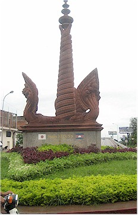
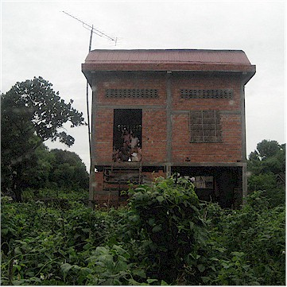
Brick houses were very rare, and they even have a TV antenna.
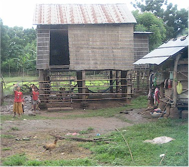
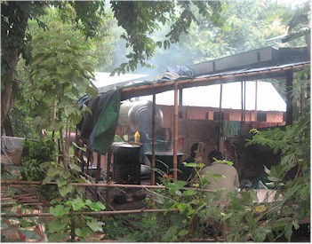
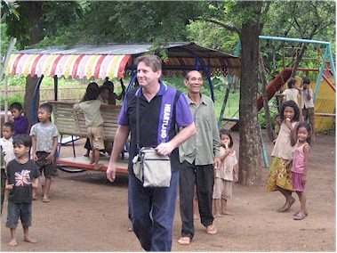
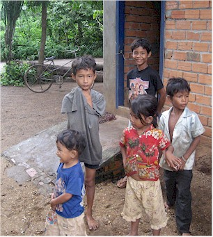
Evangelist Chun is walking just behind Andrew.
with English phrases on them, probably made in the area.
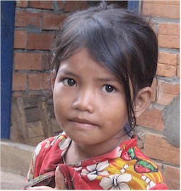
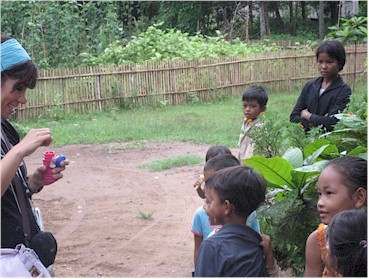
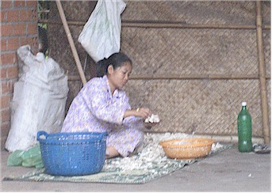
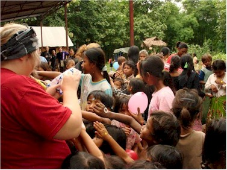
I did it for awhile but it freaked me out.
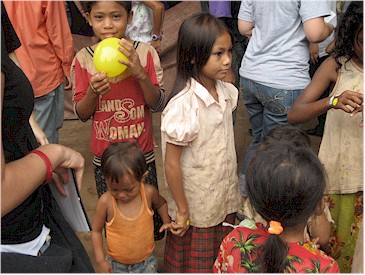
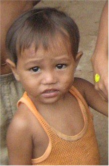
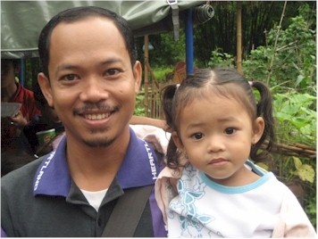
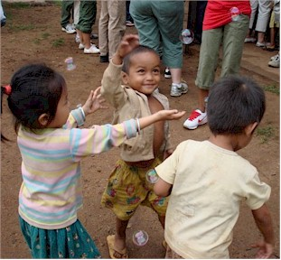
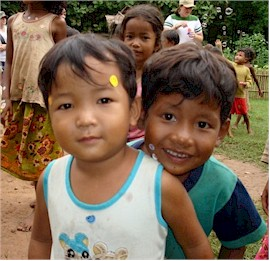
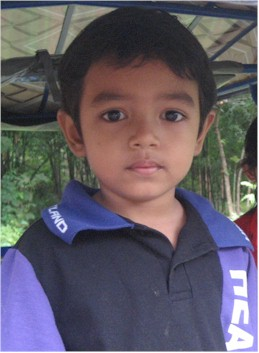
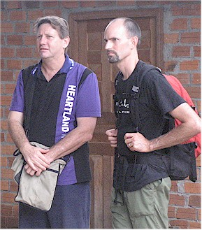
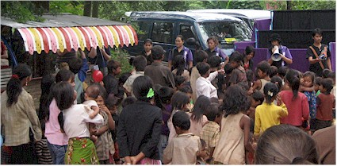
The kids are all gathered for a puppet show.
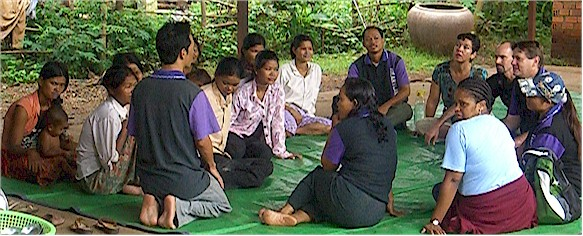
While the kids were being entertained, we got to sit down for a visit with
the ladies of the community.
It was very emotional as they told about their battles with AIDS,
near-starving levels of poverty, and
other amazing challenges that they deal with regularly.
Here Jessica lets the kids
pick out their own stickers
in a rare moment of calm.
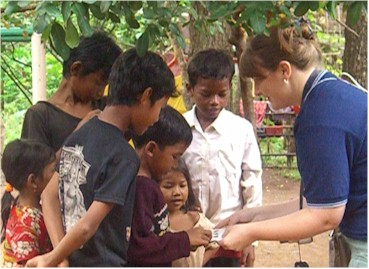
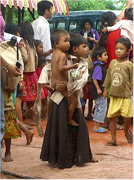
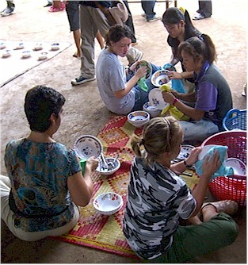
wash their hands before the feeding started!
the dishes before they are set out for the kids.
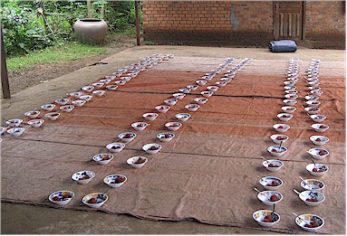
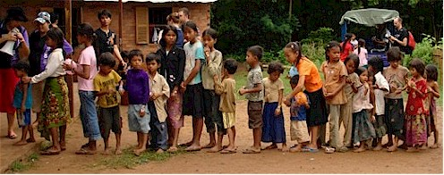
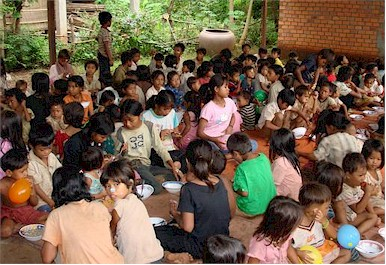
The feeding program in full swing.
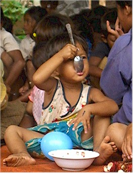
but none of us were brave enough to try it.
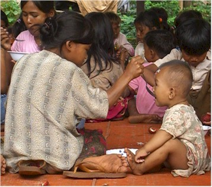
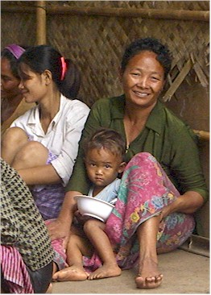
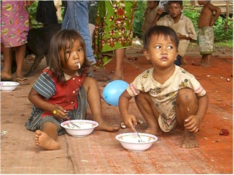
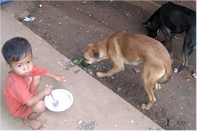
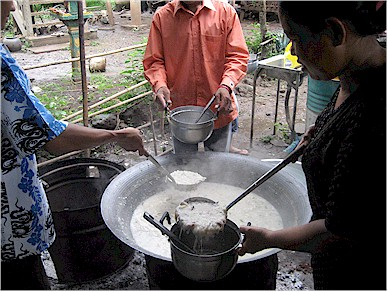
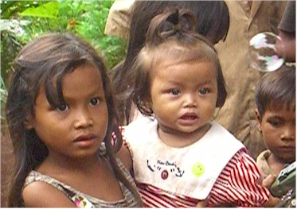
seconds. Chom was across from me in this picture doing the same.
have ever seen a bubble.
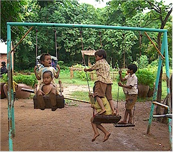
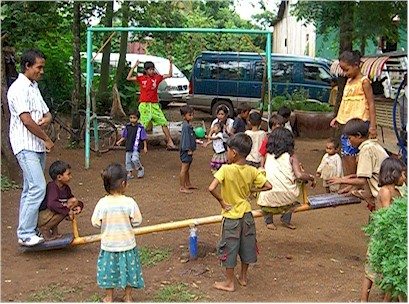
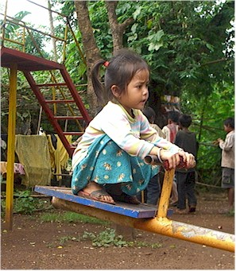
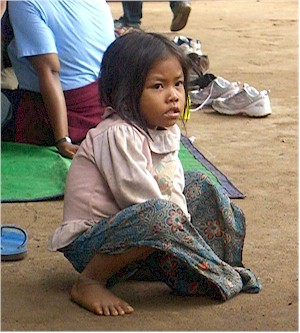
Adorable girls.
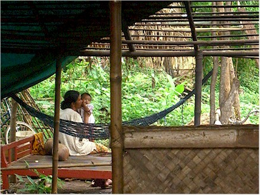
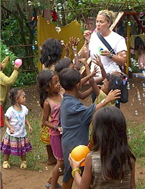
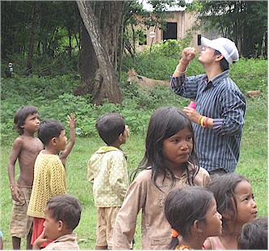
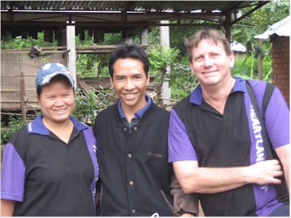
bubbles as Autumn, but giving it a good try.
Cham as Jit & Eliah moved back to their home in Thailand later that week.

Some of the gang. Jessica is turning Cambodian
on us with those silly hand signals.
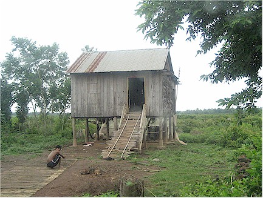
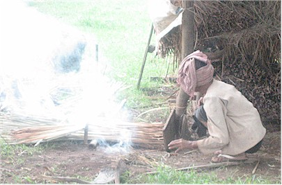
We took a different road away from there to see a site
where they are going to build a future building for Heartland.
These are some of the sights we saw on the way.
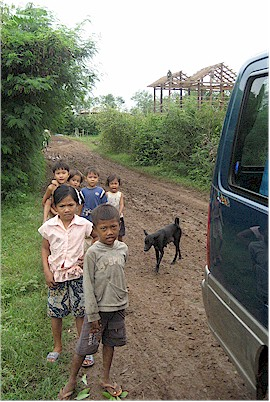
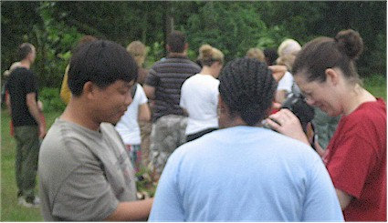
One of our drivers shows off some edible seeds, then offers some to
whoever
is brave enough to try it. I tried some things that people randomly
handed
to us, but I didn't try this particular thing.
get stuck. We slid everywhere. These kids came out
to see who was crazy enough to drive nice vans here!
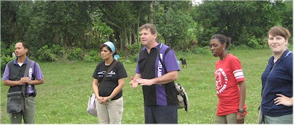
Andrew tells us of the plans for the site, then Malika said a great
prayer
for blessings over the whole area and their future plans. Heartland
has a
great ministry
going on.
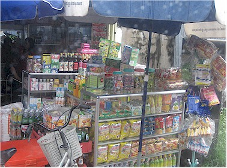
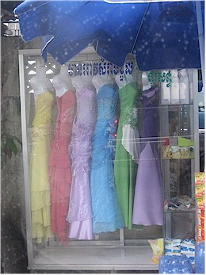
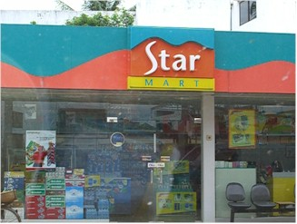
like this. I wonder where they wear them?
was the only place we could get anything resembling American food.
Each time we were heading to the hotel the whining would start, "Would
you please take us to the Star Mart?!" Our van drivers were so patient with us!
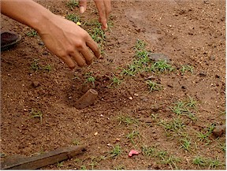
A big group of us went to the festival grounds to do
clean-up duty. While there, Sam found this that they
think is an unexploded mortar.
This is the dialogue that was reported to have been said
between Pastor David and Sam: PD asked if it was an
explosive, Sam answered that he thought so. PD replied,
"Well get away from it then!!"
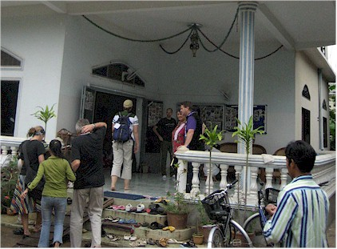
Here we are on the front porch of the building where Heartland has services.
The team getting ready for praise and worship.
Heartland staff that I got from
their site.
Next it was time to head to the festival grounds for our
last night.
It was very rainy all evening but that didn't hold back the crowds!
Here Kelly tries to get Chom to take this strange
snack thing that she won in a carnival game.
Poor Chom had an upset stomach at the time, but he would do anything for Kelly
so he ate it.
We were very early so we tried our hands at the carnival
games.
Terry and Eric did well.
I however, did not. I managed to miss with all three of my darts. But didn't I have great form?!
Here he is laughing with Sam & Andrew.
Pastor David & Chenna doing a great story
(with help) of David & Goliath. The crowd
really loved it.
No guarantees, but we may just make it on air. Tune in
December 3 - 7th to find out!
A jumbo-tron shot of the action.
joint Khmai/English songs. Thank God for Hillsong - they wrote the
songs that were our common language that everyone knew.
Josiah made a friend too.
they wait to go on again.
us to keep going when it ended.
Josiah & our translators doing some type of dance.
Allison enlisted the help of a
translator to find a safe ride
home for this little girl. We
had seen some scary people
in the area and didn't want to
leave her to get home on her own.
The after-party - back in our usual spot.
We were so excited that night, when we finally calmed down we all just
crashed.
Cambodia Index: 1 - 2 - 3 - 4 - 5 - 6 - 7 - 8 - 9 - 10 - 11 - 12